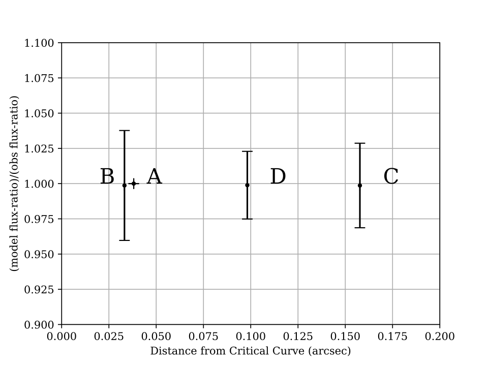

B1555
B1555 model
Updated on 18-6-2019
The best-fit model with a Jaffe profile and an exponential disk. The positions are reproduced perfectly. (11 constraints and 10 free parameters)
The flux-ratio plot indicates image A is predicted to be brighter than the rest of the images.
A model with 3rd order perturbation. The positions, again, are reprodcued perfectly. The mass model looks more symmetric as the two mass components centre more closely together. The caustic also looks smoother with such a configuration. (11 constraints and 12 free parameters, the model is under-constrained.)

With the perturbation, the flux-ratios of all the images are reproduced within 1 sigma.
With the perturbation, the mass distribution actually becomes more symmetrical. More mass is distributed at the central region of the lensing galaxy. Note that the images are reflected about the y-axis compared to the above figures.